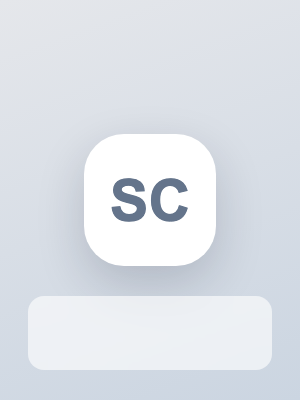

정유진
Product Frontend Engineer
About Me
React와 TypeScript로 운영자 대시보드, 검토 큐, 폼 입력 흐름을 개선합니다.

Work Experience
Product Frontend Engineer Intern @모멘텀랩스
파트너 어드민에서 API 응답 타입, 폼 검증, QA 재현 흐름을 정리했습니다.
파트너 등록 폼 검증과 타입 안정성 개선
- 계약 시작일, 담당자 이메일, 정산 계좌 정보에서 런타임 오류가 반복 발견되는 문제를 확인
- Zod 스키마와 명시 타입을 적용해 입력 단계에서 데이터 구조와 검증 기준을 분리
- 검증 실패 메시지와 제출 버튼 disabled 조건을 입력 흐름에 맞게 매핑
- QA 재현 이슈 5건 중 4건을 사전 검증 단계에서 차단
API 응답 타입과 QA 재현 흐름 정리
- 서버 응답과 화면 상태가 섞여 변경 영향 범위가 커지는 파트너 어드민 화면을 정리
- API 응답 타입을 명시하고 화면 상태와 서버 상태의 책임을 분리
- 입력값, API 응답, 화면 상태, 기대 메시지를 함께 남기는 QA 재현 템플릿 작성
운영자 테이블 상태와 예외 메시지 정리
- 파트너 목록의 로딩, 빈 상태, 권한 없음, 서버 에러 상태를 구분해 현재 처리 가능 여부를 명확히 표시
- 필터 초기화, 저장 전 확인, 제출 실패 토스트 문구를 화면 상태별로 정리해 QA 피드백 분류 기준을 만듦
Frontend Engineer Part-time @플로우키트
신청서 검토 큐와 폼 컴포넌트 상태 규칙을 정리해 운영자 워크플로를 개선했습니다.
어드민 검토 큐 화면 개선
- 상태별 탭, URL query 필터, 상세 패널, 액션 버튼 상태를 분리해 검토 흐름을 재구성
- 같은 조건의 검토 큐를 링크로 공유할 수 있게 만들어 운영자 간 확인 흐름을 단순화
- default, focus, error, disabled 상태 규칙을 정리해 신규 폼 화면의 UI 리뷰 기준을 명확히 함
검토 상세 패널과 액션 상태 설계
- 신청자 정보, 누락 서류, 담당자 메모, 처리 액션을 한 패널에서 확인하도록 정보 구조를 재배치
- loading, disabled, error 상태를 분리해 중복 승인과 실패 후 재시도 흐름을 명확히 함
- URL query와 선택 행 기준으로 QA 재현 조건을 다시 확인할 수 있는 체크리스트 작성
- 1 -